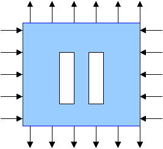
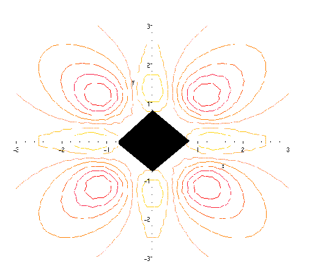
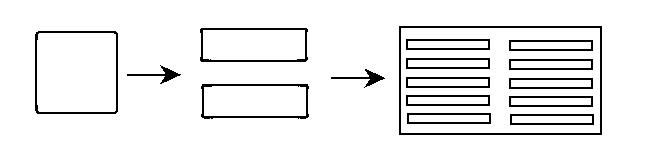
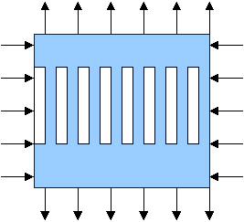

Collective effect: Forming of a cluster and composite
We continue to look on the problem
Are two optimal holes better than one?
Again, the answer depends on the sign of a. Now we consider:
Loadings of different signs
In this case, the two optimal holes are better than one optimal hole!

Both optimal holes in the pair remain elongated quadrangles. The functional is sensitive to both shapes and mutual positions of the two holes.
An
explanation of this collective effect is as
follows: For negative values of a,
the
norm of the stress tensors reaches its minima outside of the optimal boundary,
as it is shown in this cartoon of the field density.

If
one places a small hole in the point where the stress is less that the
mean stress due to influence of the "large" hole, this small hole is less
harmful. Generally, the two holes create the inhomogenuities of the stress
field to help each other to partially hide in them.
Continuing, we conclude that three holes perform better than two, and so on. This time, the optimality of an assembly of holes determines their shapes and distances between them.
This effect demonstrates that the compexity of a simple system can grow due to an optimality requirement.Interestingly, the system of several optimal inclusions forms a complicated cluster of shapes while the loading is homogeneous and the plane is infinite!
This
system is not calculated yet. The challenge stays so far...
Infinite number of inclusions
If
the connectness of the domain (the number of holes) is not prescribed,
the hole tries to dissolve into infinitely many
microholes that form a uniform structure:
microholes that form a uniform structure:
The very best configuration corresponds to infinitely many inclusions.

Curiously,
the optimal inclusions may converge to the same periodic assembly (second
rank laminates) as the system of optimal smooth holes in the case A ( a>0
),
but the character of the convergence is different: This time the functional
decreases when the connectedness of the domain (or the number of inclusions)
increases. The global minimum corresponds to infinitely many periodic infinitesimal
inclusions.
The optimal configuration of the finite number of holes and their shapes is more sophisticated than the limiting cases of one optimal "square" hole and of infinite cluster of them. Yury Grabovsky uses the following joke about mathematicians to illustrate the difficulty of the intermediate cases:
A mathematician is asked to design a table. He first designs a table with no legs. Then he designs a table with infinitely many legs. He spend the rest of his life generalizing the results for the table with N legs (where N is not necessarily a natural number). Look here for similar stories.
Recall,
that the minimum in the case A ( a>0
)
is insensitive to the connectness. In the case A, the problem has infinitely
many solutions; while in the case B ( a<0
),
no finite assembly of holes corresponds to the optimal solution.